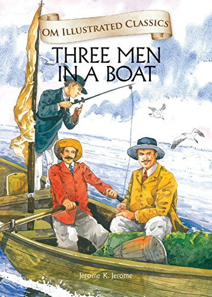

Three Men In A Boat - Jerome K. Jerome

Three Men in a Boat starts with three friends named Jerome, George,
and Harris smoking together in their apartment in London. They are all hypochondriacs
and always talk about their illnesses. After doing some research on various diseases at
the British Museum, J. somehow concluded that he has all the diseases known to man except
for housemaid’s knee. The friends then make a plan of taking a vacation together as it would
be good for their health. After some contemplation, they decide to spend a week rowing up the
Thames with their dog, Montmorency.
To have a look at next novel click here!